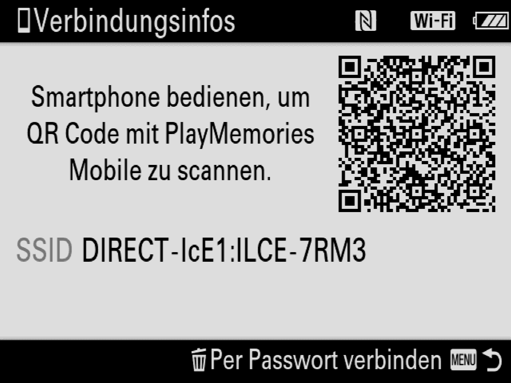

Wichtig! Diese Anleitung gilt nur für Sony Kameras, die keine PlayMemories Apps unterstützen (ab α9 Mitte 2017), also α7R III und α7 III Modelle. Wenn Ihre Kamera vor diesen Kameras auf den Markt kam oder die PlayMemories App unterstützt, müssen Sie der Sony (mit PlayMemories App) Verbindungsanleitung folgen.
Bevor wir loslegen
- Prüfen Sie, ob Ihre Kamera von Cascable unterstützt wird.
- Prüfen Sie, ob die Firmware-Version Ihrer Kamera aktuell ist.
- Prüfen Sie, ob Sie die neueste Version von Cascable haben.
Prüfen Sie, ob die Firmware-Version Ihrer Kamera aktuell ist.
Bevor Sie Ihre Kamera mit Cascable verbinden, sollten Sie überprüfen, ob die Firmware Ihrer Kamera auf dem neuesten Stand ist.
Um die Firmware-Version der Kamera anzuzeigen, wählen Sie Version aus dem  Toolbox Menü.
Toolbox Menü.
Öffnen Sie die Support-Webseite von Sony und geben Sie die Modellnummer Ihrer Kamera ein. Auf der Produktseite werden Sie die aktuelle Firmware für Ihre Kamera herunterladen können.
Cascable mit Ihrer Kamera verbinden
- Drücken Sie die Menu-Taste auf Ihrer Kamera und wechseln Sie zu
 Netzwerk > Strg m. Smartphone.
Netzwerk > Strg m. Smartphone.

- Stellen Sie sicher, dass die Strg m. Smartphone Option auf Ein gestellt ist und wählen Sie Verbindung.
- Sobald die Kamera bereit ist, zeigt sie folgenden Bildschirm an. Tippen Sie auf QR Code scannen … in Cascable und scannen Sie dann den QR Code der Kamera, um diese zu verbinden.

- Wenn Sie Ihre Kamera manuell verbinden möchten, öffnen Sie die Einstellungen App und gehen Sie zu WLAN. Wählen Sie nun das WLAN der Kamera und geben Sie das Kennwort ein, das auf Ihrem Kamerabildschirm angezeigt wird, sobald Sie
 Löschen gedrückt haben. Kehren Sie nach dem Verbinden mit dem Kameranetzwerk zu Cascable zurück, das nun Ihre Kamera erkennt und verbindet.
Löschen gedrückt haben. Kehren Sie nach dem Verbinden mit dem Kameranetzwerk zu Cascable zurück, das nun Ihre Kamera erkennt und verbindet.
Immer noch Probleme?
Wenn es immer noch nicht funktioniert, gehen Sie bitte auf die Cascable Webseite, damit wir Ihnen weiterhelfen können.